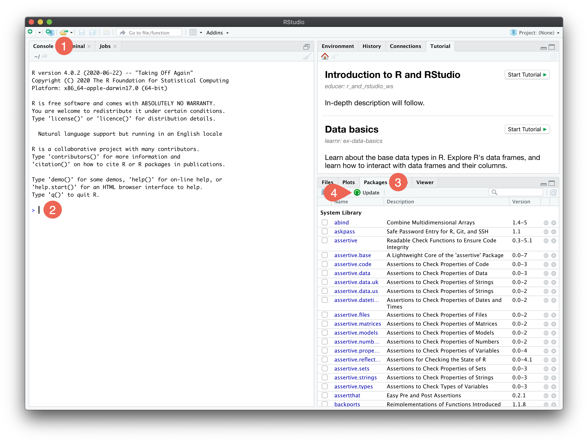
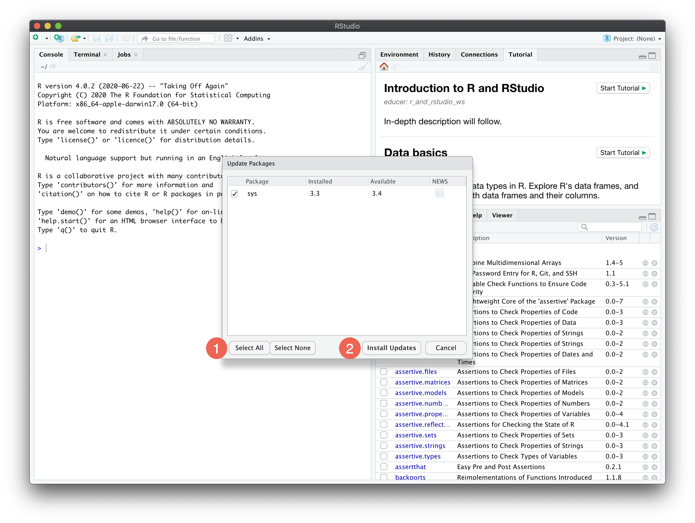

R and RStudio
To install R and RStudio, you must have administrator privileges on your machine. Choose the version appropriate for your operating system. You can also watch a video for a Mac or a Windows install (you only need to install R and RStudio, and none of the other programs mentioned in the videos). Please also note that the versions of R and RStudio in the video are older. Instead, install or update to the latest version supported by your operating system.
Install R
-
Choose among “Download and Install R” section (not “Source Code for all Platforms”).
Latest version: 4.1.2
(only for macOS Yosemite or older: legacy version 3.3.3)
Note for Mac users
If you have an M1 (and higher) Mac, you must install the Intel version of R (Bioconductor packages installed below are not yet compatible with the arm64 version).
Note for all users
You must have R installed before proceeding to the next step.
Install RStudio
Go to https://rstudio.com/products/rstudio/download/#download
Select the FREE Desktop version.
-
Choose among “Installers for Supported Platforms” section (not “Zip/Tarballs”) or follow the link to older versions of RStudio if you need a legacy version.
Latest version: 2021.09.0
(only for macOS El Capitan and older: legacy version 1.1.463)
Install R packages
Open RStudio, then:
- Select the “Console” tab of the left panel
 .
. -
Copy the following code after the prompt
>to install all necessary packages:if (!require(tidyverse)) install.packages("tidyverse") if (!require(pheatmap)) install.packages("pheatmap") if (!require(RColorBrewer)) install.packages("RColorBrewer") if (!require(BiocManager)) install.packages("BiocManager") if (!require(DESeq2)) BiocManager::install("DESeq2") if (!require(plyranges)) BiocManager::install("plyranges")While installing (or updating, see below) packages, you might be prompted:
There is a binary version available, but the source version is later: <table of package names> Do you want to install from sources the package which need compilation? (Yes/no/cancel)Always enter
nofollowed by enter. -
Update packages by selecting the “Packages” tab of the bottom right panel and then click on “Update” .
 -
If any packages are listed, first click on “Select All”
and then “Install Updates” .
Check that it worked
.Troubleshooting
RStudio looks incorrect
If you confirmed RStudio is open but don’t see the same panels as depicted above, then in the RStudio menu bar, select View > Panes > Show all panes.